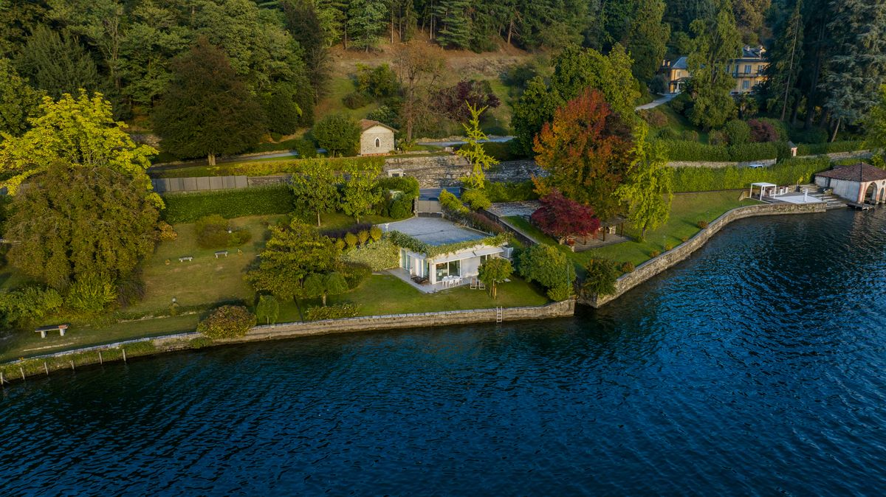

Lake Orta, situated in Piedmont in northern Italy, is a small and tranquil lake located west of Lake Maggiore and about 80 kilometres from Milan. Unlike better-known regional lakes, it maintains a quieter character and offers a quiet, romantic escape featuring the town of Orta San Giulio, UNESCO-listed sanctuaries, fine dining establishments, and walking opportunities. If you are planning a trip, our complete guide to Lake Orta covers the map, the towns, the best time to visit and how to get there.
Why Visit Lake Orta
Lake Orta offers an authentic Italian atmosphere: the main village contains Piazza Motta, surrounded by pastel-coloured buildings, cafés and a view of Isola San Giulio. The Palazzo della Comunità from 1582 stands above the square with faded frescoes and holds centuries of local history.
The cultural heritage is remarkable. The Sacro Monte di Orta, a devotional complex on a hill, is part of the UNESCO World Heritage list. Hiking and cycling trails wind through the surrounding hills. Isola San Giulio, an island housing a basilica and a Benedictine monastery, is accessible by short ferry.
For gourmet experiences, notable restaurants include Villa Crespi (3 Michelin stars), Locanda di Orta, Al Sorriso, and Giardinetto. The location is also convenient—approximately a one-and-a-half-hour drive from Milan or Turin.
Things to Do
People-watch and enjoy refreshments in Piazza Motta. Explore cobblestone alleys and churches including San Rocco and the Church of St. Mary of the Assumption. Take the ferry to Isola San Giulio for basilica exploration and a meditative walk around the island. Hike the Sacro Monte through twenty chapels dedicated to St. Francis of Assisi. Enjoy aperitivos at lakeside bars.

Villa Volpe: The Perfect Base
The property offers private lakeside access for swimming, kayaking or simply relaxing, a spacious garden with panoramic views of the lake and surrounding hills, and authentic design that combines traditional architecture with modern amenities, reflecting the character of Orta San Giulio.